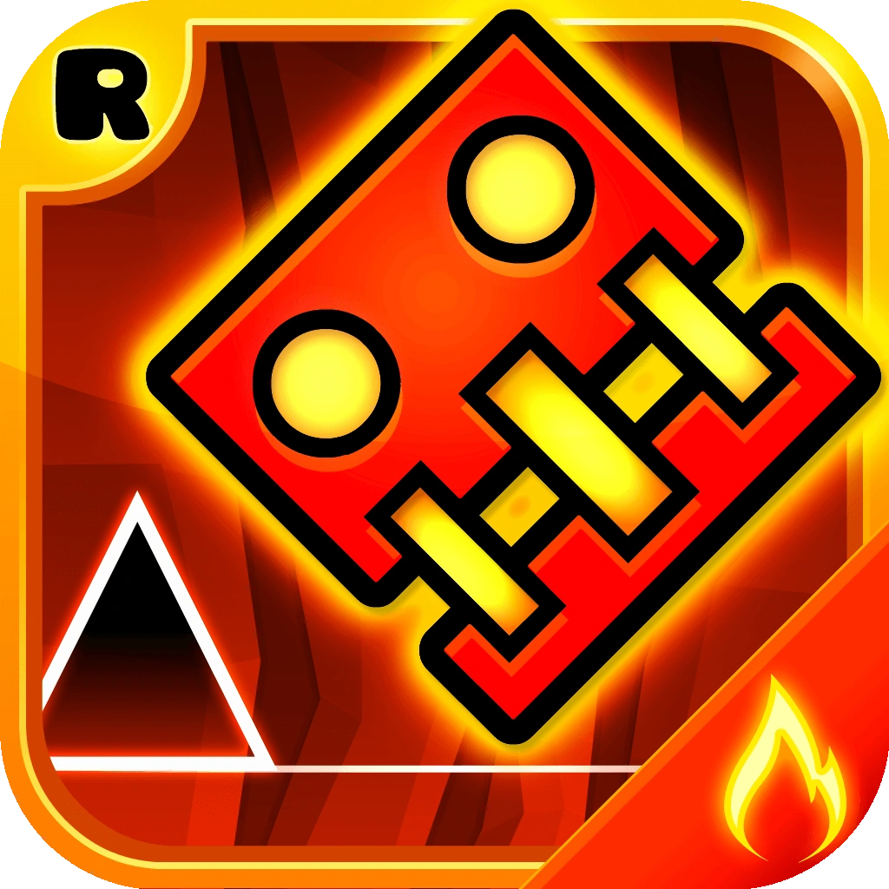

A Geometry Dash Lite a játék ingyenes verziója reklámokkal és játékkorlátozásokkal. A Geometry Dash Lite csak az 1–19. fő szinteket, az összes toronyszintet és néhány kiválasztott szintet tartalmazza, amelyek Kiemelt, Napi, heti vagy Eseményszintek, de nem kínálnak lehetőséget szintek létrehozására vagy a legtöbb játékos által készített szintre. A karakterek testreszabási lehetőségeinek is lényegesen korlátozottabb a választéka, hiányzik sok ikon, szín és egyéb karaktereffektus a teljes játékból.
2015. december 16-án a Topala bejelentette a Geometry Dash Meltdown című spin-off játékot , amely 2015. december 19-én jelent meg iOS- re és Androidra. Három pályát tartalmaz, amelyeken az F-777 dalai szerepelnek. A játék új ikonokat és funkciókat mutatott be az eredeti játék 2.0-s verziójában hozzáadott szinteken.
2016. december 21-én a Topala bejelentette a második spin-off játékot Geometry Dash World címmel , mondván, hogy még aznap megjelenik. Két világot tartalmaz, mindegyik öt szinttel, és olyan funkciókat vezet be, amelyek az eredeti játékhoz később, a 2.1-es frissítés során kerültek. Más játékosok által létrehozott pályák választékát is tartalmazza.
A Gamezebo dicsérte a játék lebilincselő képességét és tisztességes játékstílusát. Bár a bíráló megjegyezte, hogy nem ez volt a „legérdekesebbnek tűnő játék”. Gerson Noboa , az AndroidGuystől azt mondta, hogy „ A Geometry Dash World méltó kiegészítője a játékarzenálnak. A szorosan összekapcsolt grafikus és hangelemeknek köszönhetően a játék olyan félelmetes, integrált élményt nyújt, amely ritkán látható a Play Áruház játékaiban.
2017. december 12-én a Topala bejelentette a harmadik spin-off játékot Geometry Dash SubZero címmel , amely 2017. december 21-én jelent meg. A Geometry Dash SubZero szintjei mind tartalmaznak a 2.2-es frissítésben jelen lévő funkciókat, annak ellenére, hogy a frissítés kiadási dátuma évekkel későbbi.